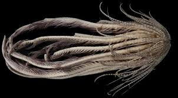
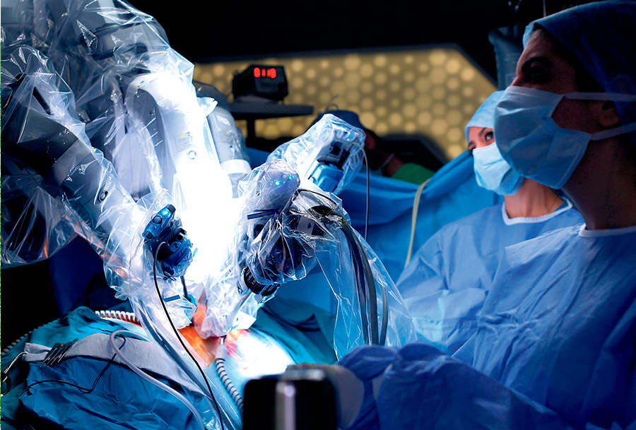

Titulares
- Descubren nueva especie marina en el Pacífico
- Elecciones 2025: todo lo que debes saber
- Avances tecnológicos revolucionan la medicina
- La selección nacional lucha con todo para entrar a repechage
Descubren nueva especie marina en el Pacífico
Científicos han hallado una especie inédita de medusa en aguas profundas del Océano Pacífico. Este hallazgo representa un avance en la biología marina y abre puertas a nuevas investigaciones sobre la biodiversidad del océano.
Elecciones 2025: todo lo que debes saber
Conoce las fechas clave, candidatos y propuestas para las elecciones generales del próximo año. Además, analizamos el panorama político actual y las encuestas más recientes.
Avances tecnológicos revolucionan la medicina
Desde cirugías asistidas por inteligencia artificial hasta dispositivos de diagnóstico en casa, la tecnología está transformando los servicios médicos de forma acelerada.
La selección nacional lucha con todo para entrar a repechage
El equipo técnico anuncia la lista preliminar de convocados mientras inician los entrenamientos de cara a la Copa del Mundo 2026. Expectativa y emoción entre los fanáticos.